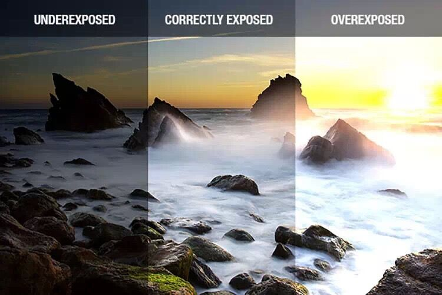
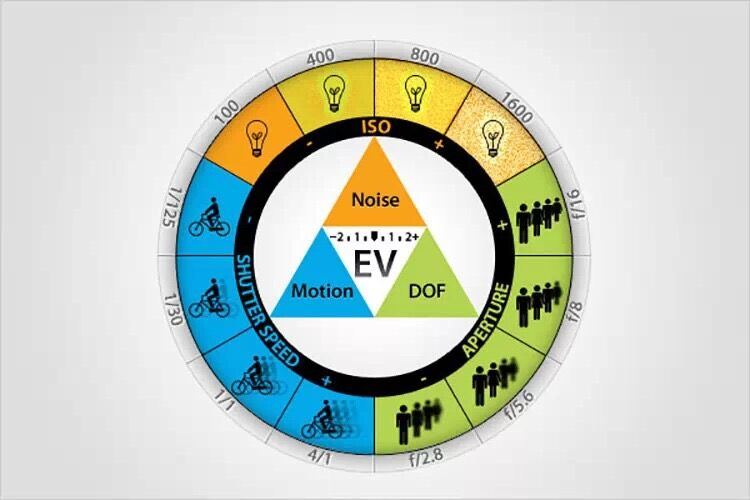
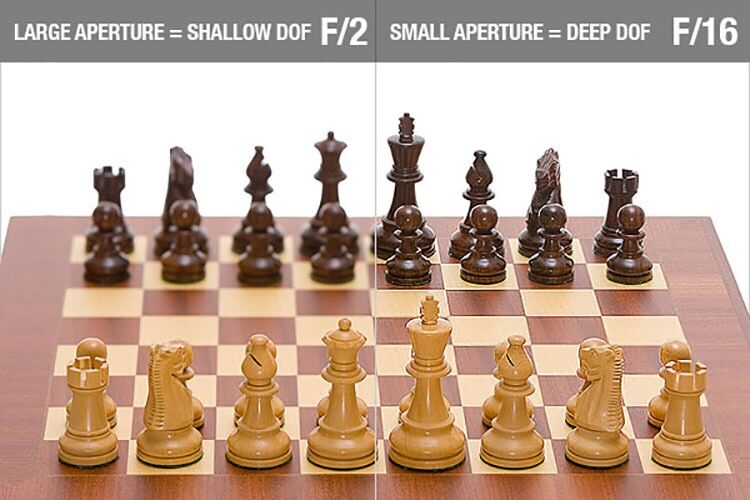
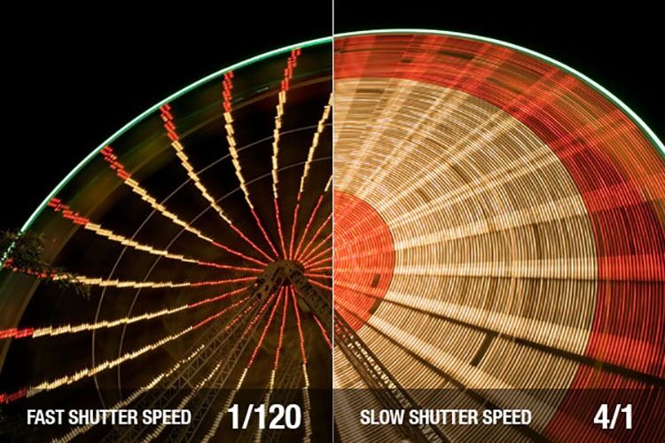
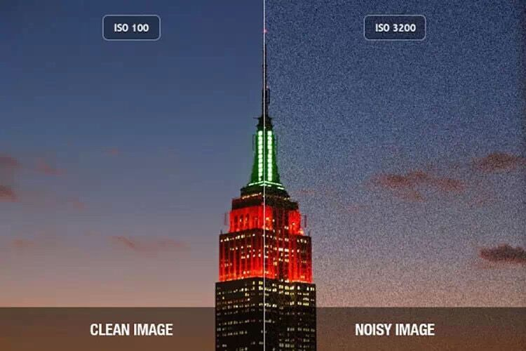
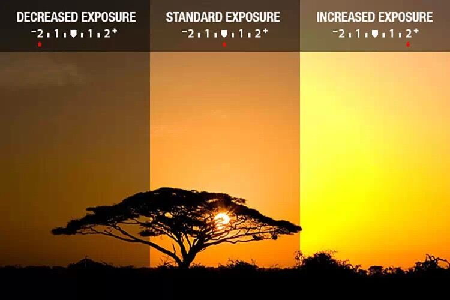

摄影的基本术语
首先是基础的基础：曝光

左：曝光不足
中：曝光正常
右：曝光过度
影响曝光的3个因素为：光圈、快门、感光度。
光圈控制镜头进光直径的大小，光圈越大曝光越多。
快门控制通光时间的长短，快门时间越长曝光越多。
感光度控制传感器对光的敏感度，感光度越高越敏感，也就是说同等亮度的环境下，感光度设置越高，需要的曝光就越少。
知道了以上三者的关系，你就知道设置怎样的参数才能获得曝光正常的影像了。但只是曝光正常还不够，不同的光圈、快门、感光度，拍出来的画面效果是不一样的，所以你需要自行决定使用什么样的参数组合。
不同参数设置对画面的影响

具体来看

光圈
左：光圈F2（大）景深小，只有对焦点平面上的图像（图中为第一排棋子）清晰
右：光圈F16（小）景深大，整个纵深内的影像都清晰
注：目前手机的镜头是固定光圈的定焦头，常见光圈值有1.8、2.0、2.2，都为不可变光圈，所以在景深改变上幅度较小。

快门速度
左：1/120s（快），图像清晰无拖影
右：4s（慢），图像有眼中拖影，亮点的运动轨迹直接练成一线

感光度
左：IS0100（感光度低），清晰的画面
右：ISO3200（感光度高），噪点很多的画面
综上，手机摄影大大降低了学习摄影的难度，但是了解一些基本术语与摄影知识也非常必要。

另外，如果你想得到一些“不正常”的曝光效果，可以使用曝光补偿的功能进行自动控制。
左：补偿-2，暗
中：补偿0，正常
右：补偿+2，亮